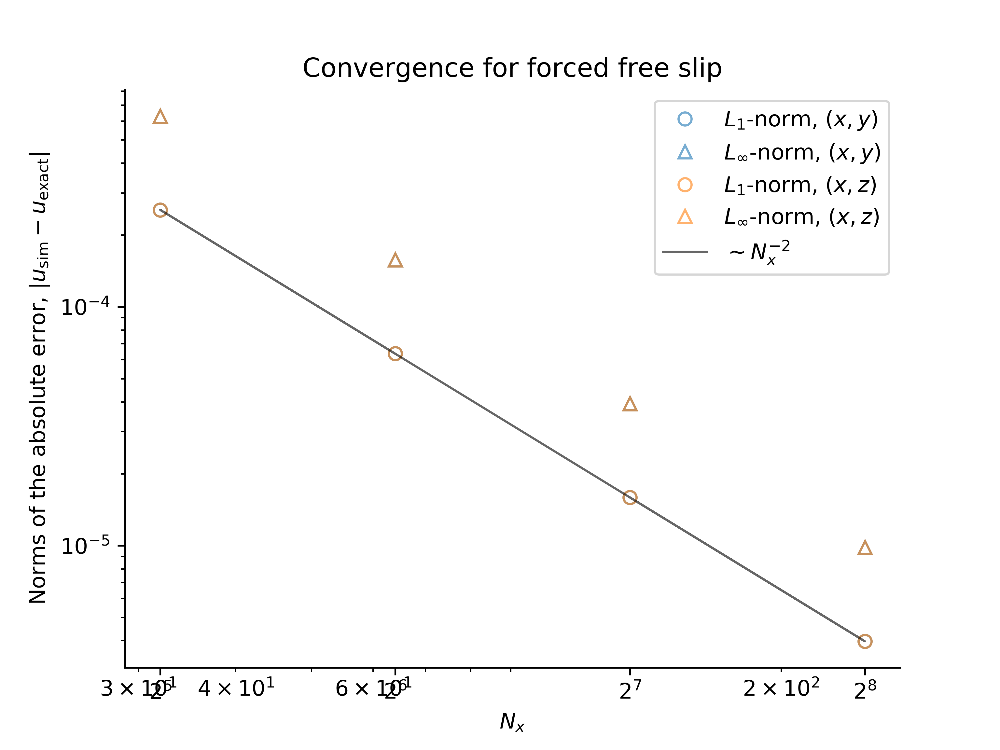
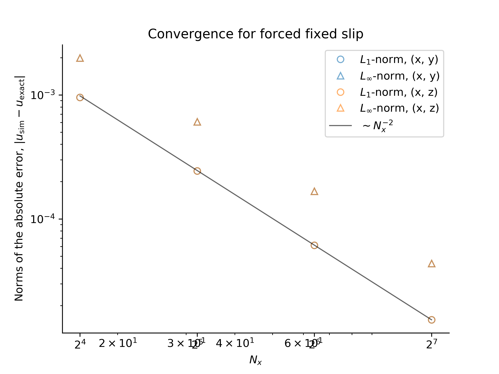

Convergence Tests
Convergence tests are implemented in /verification/convergence_tests and range from zero-dimensional time-stepper tests to two-dimensional integration tests that involve non-trivial pressure fields, advection, and diffusion.
For all tests except point exponential decay, we use the $L_1$ norm,
and $L_\infty$ norm,
to compare simulated fields, $\phi_\mathrm{sim}$, with exact, analytically-derived solutions $\phi_\mathrm{exact}$. The field $\phi$ may be a tracer field or a velocity field.
Point Exponential Decay
This test analyzes time-stepper convergence by simulating the zero-dimensional, or spatially-uniform equation
with the initial condition $c = 1$, which has the analytical solution $c = \mathrm{e}^{-t}$.
We find the expected first-order convergence with decreasing time-step $\Delta t$ using our first-order accurate, "modified second-order" Adams-Bashforth time-stepping method:

This result validates the correctness of the Oceananigans implementation of Adams-Bashforth time-stepping.
One-dimensional advection and diffusion of a Gaussian
This and the following tests focus on convergence with grid spacing, $\Delta x$.
In one dimension with constant diffusivity $\kappa$ and in the presence of a constant velocity $U$, a Gaussian evolves according to
For this test we take the initial time as $t=t_0$. We simulate this problem with advection and diffusion, as well as with $U=0$ and thus diffusion only, as well as with $\kappa \approx 0$ and thus "advection only". The solutions are

which exhibit the expected second-order convergence with $\Delta x^2 \propto 1 / N_x^2$:

These results validate the correctness of time-stepping, constant diffusivity operators, and advection operators.
One-dimensional advection and diffusion of a cosine
In one dimension with constant diffusivity $\kappa$ and in the presence of a constant velocity $U$, a cosine evolves according to
The solutions are

which exhibit the expected second-order convergence with $\Delta x^2 \propto 1 / N_x^2$:

These results validate the correctness of time-stepping, constant diffusivity operators, and advection operators.
Two-dimensional diffusion
With zero velocity field and constant diffusivity $\kappa$, the tracer field
decays according to
with either periodic boundary conditions, or insulating boundary conditions in either $x$ or $y$.
The expected convergence with $\Delta x^2 \propto 1 / N_x^2$ is observed:

This validates the correctness of multi-dimensional diffusion operators.
Decaying, advected Taylor-Green vortex
The velocity field
is a solution to the Navier-Stokes equations with $\nu=1$.
The expected convergence with spatial resolution is observed:

This validates the correctness of the advection and diffusion of a velocity field.
Forced two-dimensional flows
We introduce two convergence tests associated with forced flows in domains that are bounded in $y$, and periodic in $x$ with no tracers.
Note: in this section, subscripts are used to denote derivatives to make reading and typing equations easier.
In a two-dimensional flow in $(x, y)$, the velocity field $(u, v)$ can be expressed in terms of a streamfunction $\psi(x, y, t)$ such that
where subscript denote derivatives such that $\psi_y \equiv \partial_y \psi$, for example. With an isotropic Laplacian viscosity $\nu = 1$, the momentum and continuity equations are
while the equation for vorticity, $\omega = v_x - u_y = \nabla^2 \psi$, is
Finally, taking the divergence of the momentum equation, we find a Poisson equation for pressure,
To pose the problem, we first pick a streamfunction $\psi$. This choice then yields the vorticity forcing $F_\omega$ that satisfies the vorticity equation. We then determine $F_u$ by solving $\partial_y F_u = - F_\omega$, and pick $F_v$ so that we can solve the Poisson equation for pressure.
We restrict ourselves to a class of problems in which
Grinding through the algebra, this particular form implies that $F_\omega$ is given by
where primes denote derivatives of functions of a single argument. Setting $\partial_y F_u = F_\omega$, we find that if $F_v$ satisfies
then the pressure Poisson equation becomes
This completes the specification of the problem.
We set up the problem by imposing the time-dependent forcing functions $F_u$ and $F_v$ on $u$ and $v$, initializing the flow at $t=0$, and integrating the problem forwards in time using Oceananigans. We find the expected convergence of the numerical solution to the analytical solution: the error between the numerical and analytical solutions decreasess with $1/N_x^2 \sim \Delta x^2$, where $N_x$ is the number of grid points and $\Delta x$ is the spatial resolution:

The convergence tests are performed using both $y$ and $z$ as the bounded direction.
Forced, free-slip flow
A forced flow satsifying free-slip conditions at $y=0$ and $y=\pi$ has the streamfunction
and thus $g(y) = \sin y$. The velocity field $(u, v)$ is
which satisfies the boundary conditions $u_y |_{y=0} = u_y |_{y=\pi} = 0$ and $v |_{y=0} = v |_{y=\pi} = 0$. The vorticity forcing is
which implies that
and $F_v = \frac{1}{2} \sin 2 y$.
Forced, fixed-slip flow
A forced flow satisfying "fixed-slip" boundary conditions at $y=0$ and $y=1$ has the streamfunction
and thus $g(y) = y^3 - y^2$. The velocity field $(u, v)$ is
which satisfies the boundary conditions
The vorticity forcing is
which implies that
while
We set up the problem in the same manner as the forced, free-slip problem above. Note that we also must the no-slip boundary condition $u |_{y=0} = 0$ and the time-dependent fixed-slip condition $u |_{y=1} = f$. As for the free-slip problem, we find that the error between the numerical and analytical solutions decreasess with $1/N_x^2 \sim \Delta x^2$, where $N_x$ is the number of grid points and $\Delta x$ is the spatial resolution:

The convergence tests are performed using both $y$ and $z$ as the bounded direction.